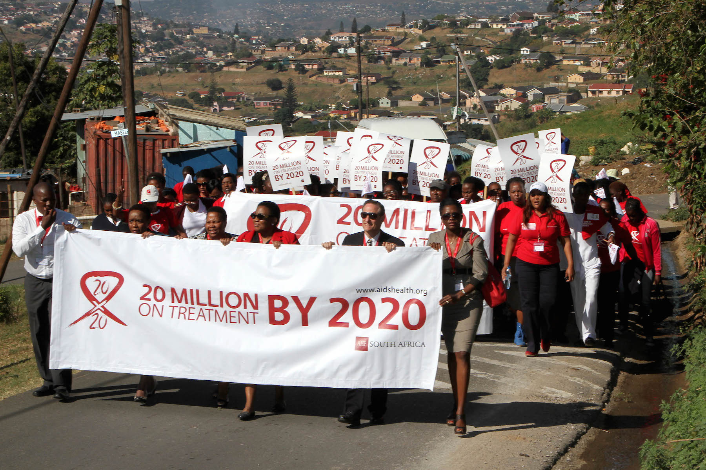
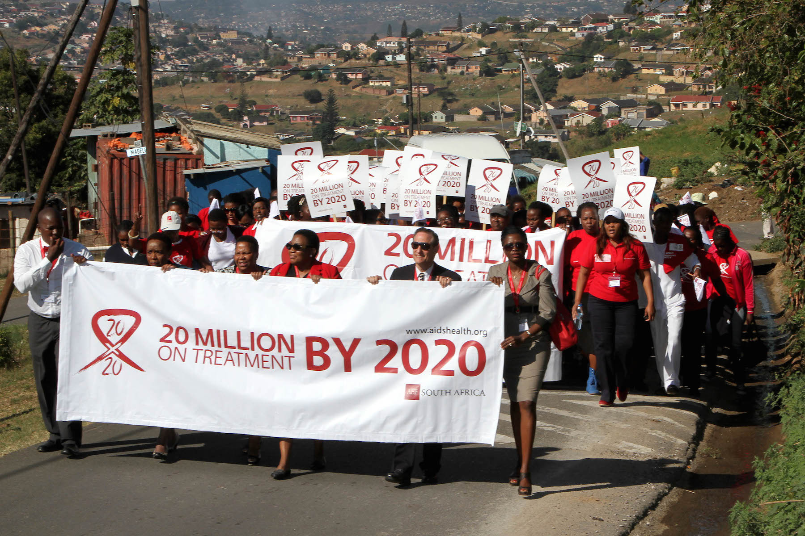

Welcome to the AIDS Foundation of South Africa, your trusted resource for comprehensive support and services related to HIV/AIDS. On this website, you can Learn about our history and the dedicated team behind our organization,Discover the range of free services we offer to support those affected by HIV/AIDS,Get in touch with us through our enquiry form or contact information,Find out more about our location and how to reach us.Whether you're looking for support, resources, or simply want to learn more about our work, we're here to provide guidance and care. Explore our website to find the information and help you need.
The AIDS Foundation of South Africa is committed to providing comprehensive support and services to individuals and communities affected by HIV/AIDS. However, we cannot do it alone. We need your help to continue our life-saving work and make a meaningful difference in the lives of those we serve.
We urge you to join us in the fight against HIV/AIDS by:
Making a donation: Your financial contribution will help us provide essential services, including counseling, testing, and treatment support.
Volunteering your time and skills: Share your expertise and passion with us, and help us reach more people in need.
Spreading the word: Help us raise awareness about HIV/AIDS and the importance of support services by sharing our message with your network.
Getting involved: Contact us to learn more about our services and how you can get involved, whether through volunteering, donating, or partnering with us.Every contribution counts! Whether you're an individual, organization, or community leader, your support will help us provide vital services to those affected by HIV/AIDS. Together, we can create a brighter future for individuals and communities in South Africa.
 
